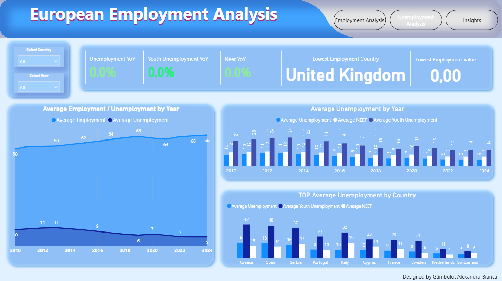

1. Employment & Unemployment Overview

Overall employment and unemployment performance across Europe, including the highest and lowest scoring countries and YoY employment changes.
2. Employment Indicators by Country

Comparison of countries based on average employment, part-time work and temporary employee share between 2010–2024.
3. Unemployment & Youth NEET Analysis
Breakdown of unemployment indicators including youth unemployment, NEET rates and long-term unemployment evolution.
4. Key Insights & Conclusions

Strategic observations covering labour market improvements, regional differences and structural workforce challenges.